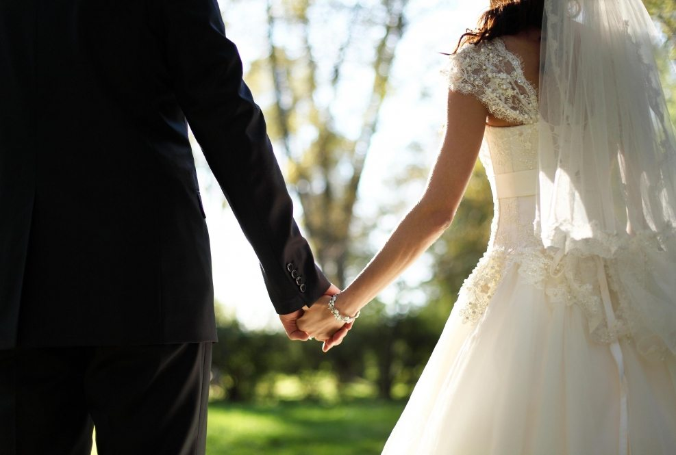
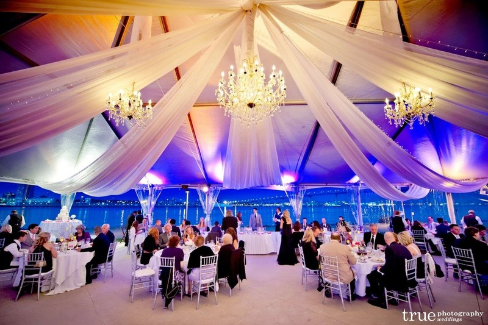
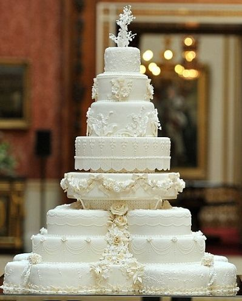

Proposal Planning and Design
For couples looking for full planning, we work with you right from the beginning of the process, creating budgets, drawing up time lines, scouting locations and providing customized vendor recommendations. We will be the primary contact for all the vendors involved and manage
the entire planning process. We will make sure that the design of the wedding is cohesive and thoughtful, and that no detail is missed.
Capabilities include:
Food and Decoration
- Welcome Treats: Appetizers as your guests arrive at the venue.
- Full-Course Buffet Menu with Free Flowing Drinks. (Menu available upon request)
- Personalized Labels for each dish
- Use of complete sets of Dinnerware, Flatware and Glassware

- Complete Table Setting with Table Numbers
- Banquet chairs with seat covers and ribbon accents
- Dressed Banquet Tables with Cloth Table Napkins
- Special VIP Treatment Food Service for the Presidential Table
- Professionally Trained Banquet Staffs in Uniform
- Pair of Doves for Dove Release Tradition
- Bottle of Wine for Wedding Toast
- Red Carpet
Wedding Cake and Give-Aways

- 30 pieces Wedding Invitations
- 2 Layer Icing Wedding Cake
- 3 Hours Photobooth with Props and STOP TIME
Photo and Video Coverage with PreNup and Wedding Album. (Preparation to Ceremony to Reception)
- Pre-Nuptial Pictorial or Engagement Session
- 1 Professional Videographer w/ HD Video DSLR Video Camera
- 1 Professional Photographer w/ Digital SLR Camera
- Unlimited Shots in DVD
- Edited DVD Mastered Video (20-30 mins)
- 8x10 20 pages Coffee Table Wedding Album